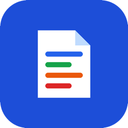

Política de privacidad
Editor de documentos
Última actualización: 21 de octubre de 2026
Esta política explica qué información maneja la aplicación para Android Editor de documentos (la “App”), desarrollada por Oscar Ramírez (RamzLabs), Guadalajara, Jalisco, México (el “Desarrollador”), y cómo se utiliza.
- Los documentos que abres, creas o editas (PDF, Word, Excel y PowerPoint) se procesan y guardan solo en tu teléfono. La App no los sube a ningún servidor y el Desarrollador no puede verlos.
- La App no requiere crear una cuenta.
- La App muestra anuncios de Google AdMob, que recopila ciertos datos del dispositivo (como el ID de publicidad) para mostrar y medir anuncios.
1. Tus documentos
La App te permite abrir, ver, editar, crear y convertir documentos. Para ello:
- Cuando eliges un archivo, o lo abres desde otra app con “Abrir con…”, la App guarda una copia en su almacenamiento privado dentro de tu dispositivo para poder mostrarlo y editarlo. El archivo original no se modifica.
- La App guarda la lista de documentos recientes (nombre y ubicación de esas copias) en tu dispositivo.
- Todo el procesamiento (lectura, edición, búsqueda y conversión) ocurre en tu teléfono.
El contenido de tus documentos no se envía a servidores del Desarrollador ni a terceros, no se analiza con fines publicitarios y no se comparte con Google ni con anunciantes.
Solo sale de tu teléfono si tú lo decides: al usar Compartir (se envía a la app que elijas) o Guardar como… (se guarda en la ubicación que elijas, que puede ser un servicio en la nube como Google Drive). En esos casos se aplican las políticas de privacidad de esas apps o servicios.
2. Publicidad (Google AdMob)
La App usa Google AdMob para mostrar anuncios. El SDK de Google Mobile Ads puede recopilar y procesar automáticamente:
- El ID de publicidad de Android.
- La dirección IP y la ubicación aproximada derivada de ella.
- Información del dispositivo y del sistema (modelo, versión de Android, idioma).
- Interacciones con los anuncios y datos de diagnóstico y rendimiento.
Google usa estos datos para mostrar anuncios, medir su rendimiento, prevenir fraudes y, cuando lo permites, personalizar la publicidad. Más información:
3. Consentimiento y control de los anuncios
- Si te encuentras en el Espacio Económico Europeo, el Reino Unido o Suiza, la App te pedirá tu consentimiento antes de usar tus datos para anuncios personalizados. Puedes cambiar tu elección en cualquier momento desde Inicio → menú (⋮) → Opciones de privacidad.
- En cualquier país puedes restablecer o eliminar tu ID de publicidad, o desactivar la personalización de anuncios, en Ajustes de Android → Google → Anuncios (o Ajustes → Seguridad y privacidad → Otros ajustes de privacidad → Anuncios).
4. Permisos de la App
- Internet y estado de la red: solo para cargar anuncios. Tus documentos no se transmiten por internet.
- ID de publicidad: lo usa AdMob según lo descrito arriba.
La App no pide acceso a todo tu almacenamiento: solo puede leer los archivos que tú eliges en el selector de Android o que abres desde otra app, y solo escribe donde tú indicas al usar “Guardar como…”. No accede a tus contactos, cámara, micrófono ni ubicación precisa.
5. Conservación y eliminación de datos
Las copias de tus documentos y la lista de recientes permanecen en tu dispositivo hasta que las eliminas desde la App (opciones del documento → Eliminar de la app), borras los datos de la App desde los ajustes de Android o la desinstalas. Como el Desarrollador no guarda copias, no puede recuperarlos si se pierden. Para los datos que trata Google, consulta la política de Google.
6. Seguridad
Las copias de tus documentos se guardan en el almacenamiento privado de la App, al que otras aplicaciones no pueden acceder. Te recomendamos proteger tu teléfono con bloqueo de pantalla.
7. Menores de edad
La App es una herramienta de productividad que no está dirigida a menores de 13 años. No recopilamos de forma intencional información de menores.
8. Cambios a esta política
Podemos actualizar esta política. Publicaremos la versión vigente en esta misma página con su fecha de actualización.
9. Contacto
Si tienes preguntas sobre esta política o sobre tus datos, escribe a oscarivanramirezruiz96@gmail.com.